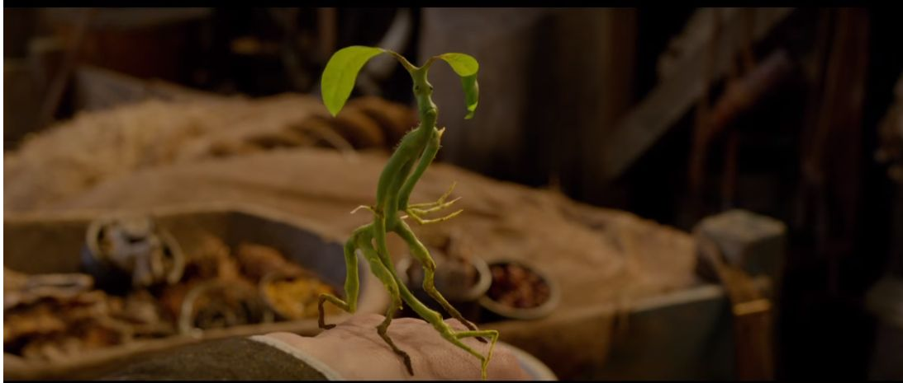

뒤로 가기

나무에 사는 생물. 팔다리를 한쌍씩 가지고 있고 이족보행을 하는 인간형 생물로, 피부가 마치 나무로 이루어진 것처럼 생겼다. 자물쇠를 따는 재능이 뛰어나다.
보우트러클이 사는 나무는 모두 마력을 가진 나무인데, 지팡이를 만드는 나무도 평범한 나무가 아닌 마력을 지닌 나무들만이 가능하다. 이 때문에 이 보우트러클들이 사는 나무는 반드시 노려지기 마련이다.
본래 보우트러클들은 자기가 사는 나무를 건드리면 굉장히 적대적으로 굴며 공격도 가차없이 가해 오지만, 마법사들이 정중하게 부탁하면 지팡이 한두 개 만들 정도의 재료로 가지 몇개 정도는 내어준다고 한다.
쥐며느리 벌레를 좋아하나 간혹 요정의 알도 먹는다. 위에서 말한 정중한 부탁을 할 때도 나무에 기생하는 벌레를 주면서 하면 효과가 배가 된다.